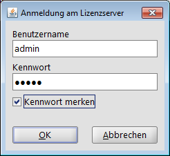
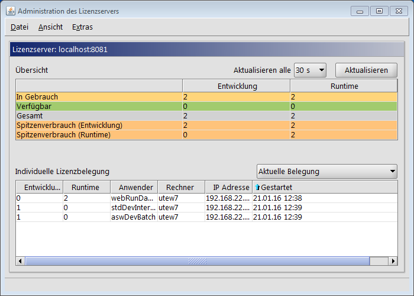
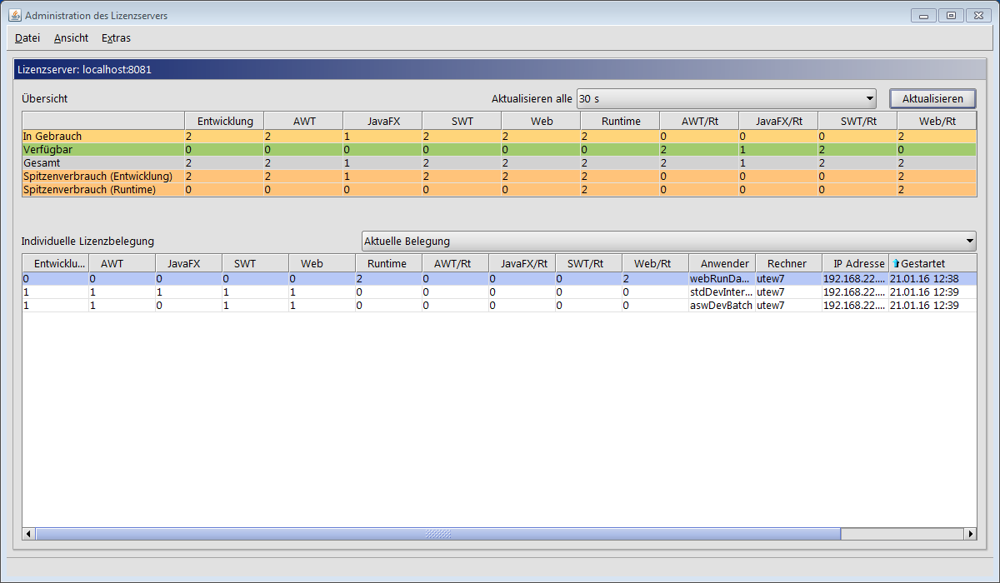
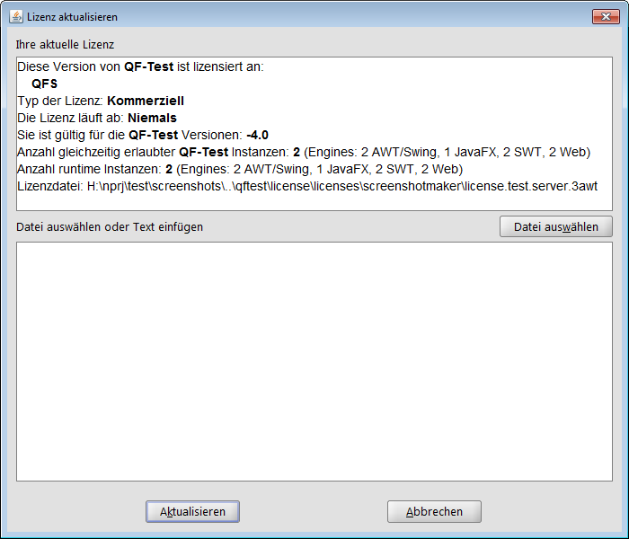
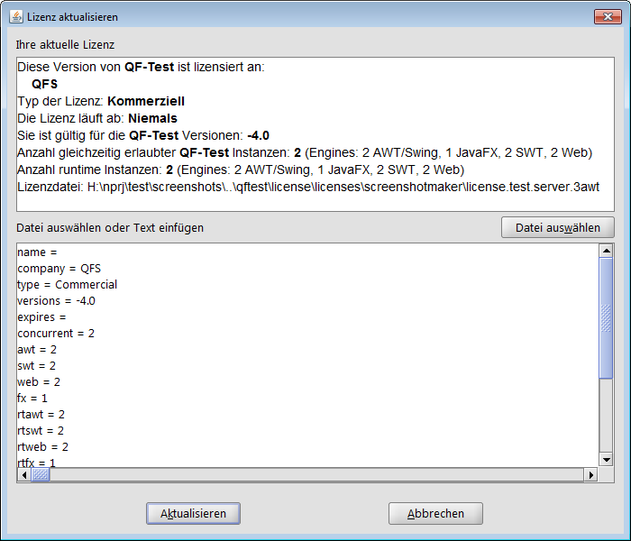
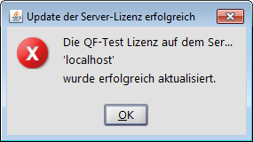

| Version 6.0.3 |
Das Administrationsprogramm kann mittels der beiden folgenden Methoden gestartet werden:
qftest
-licenseserver-admin
Zunächst erscheint ein Anmeldedialog. Hier wird der Benutzername (aktuell 'admin') und das Kennwort eingegeben. Zusätzlich kann hinterlegt werden, ob die Anmeldeinformationen beim nächsten Start wieder abgefragt werden soll.
|
|  | ||
|
| Abbildung 4.1: Anmeldefenster | ||
Das Administationsprogramm umfasst eine Menüzeile, eine Übersichtstabelle, eine Aufstellung der individuellen Lizenzbelegung und je nach Konfiguration eine Statuszeile.
|
|  | ||
|
| Abbildung 4.2: Administrationsprogramm | ||
Dieser Menüpunkt wird durch Anklicken aktiviert bzw. deaktiviert. Ist »Ansicht«-»Engines anzeigen« nicht aktiviert, werden in der Anzeige jeweils die Summen aller Entwickungs- und aller Runtime-Lizenzen angezeigt.
Ist »Ansicht«-»Engines anzeigen« aktiviert, werden die abgerufenen Lizenzen auch pro Engine angezeigt. Dies ist sinnvoll, wenn die Server-Lizenz für eine unteschiedliche Anzahl von Engines gültig ist. Ein Beispiel finden Sie in Abbildung Aktuelle Belegung mit 'Engines anzeigen' zu Anfang des Kapitels Tabellen.
Über die daran anschließende Auswahlliste kann festgelegt werden, in welchem Abstand (von 5 s bis 5 min) die aktuellen Lizenzbelegungswerte vom Server abgefragt und zur Anzeige gebracht werden.
fragt die aktuellen Lizenzbelegungswerte beim Lizenzserver ab und aktualisiert die Anzeige.
Über der Tabelle Individuelle Lizenzbelegung befindet sich ein Auswahlfeld, über das gesteuert wird, welche Daten in der Tabelle angezeigt werden.
|
|  | ||
|
| Abbildung 4.3: Aktuelle Belegung mit 'Engines anzeigen' | ||
Anzahl der für den entsprechenden Modus (Entwickung/Runtime) bzw. die entsprechenden Engines verfügbaren Lizenzen.
In der oben abgebildeten Tabelle stehen für alle Engines außer Java FX zwei Entwickungslizenzen zur Verfügung. Diese werden von zwei QF-Test Clients belegt, von denen einer alle Engines nutzt, der andere alle außer Java FX. Die beiden Runtime-Lizenzen werden von einem QF-Test Client belegt, der nur die Web-Engine nutzt.
Die Tabelle der individuellen Lizenzbelegung zeigt die über die Auswahlbox Auswahl der individuellen Lizenzbelegungdaten festgelegten Daten an. In den Tabellenspalten finden Sie folgende Informationen:
Anzahl der vom QF-Test Client belegten Entwicklungslizenzen für die jeweilige Engine.
Die Anzeige dieser Spalten kann über den Menüpunkt »Ansicht«-»Engines anzeigen« aktiviert werden.
Anzahl der vom QF-Test Client belegten Runtime-Lizenzen für die jeweilige Engine.
Die Anzeige dieser Spalten kann über den Menüpunkt »Ansicht«-»Engines anzeigen« aktiviert werden.
Die Server-Lizenz kann interaktiv über das Lizenzadministrationsprogramm aktualisiert werden. Dies geschieht über das Menü »Extras«-»Server-Lizenz aktualisieren«. Es erscheint der folgende Dialog:
|
|  | ||
|
| Abbildung 4.4: Aktualisierungsdialog | ||
Dieser Dialog zeigt im oberen Teil die aktuell im Einsatz befindliche Server-Lizenz.
Im unteren Textfeld kann entweder manuell der Text der von Quality First Software GmbH zur Verfügung gestellten Lizenzdatei eingegeben werden oder über die Schaltfläche "Datei auswählen" direkt aus der Lizenzdatei ausgelesen werden.
|
|  | ||
|
| Abbildung 4.5: Aktualisierungsdialog mit neuer Lizenz | ||
Wenn die Lizenzdaten im unteren Dialogfeld zur Verfügung stehen, kann die Schaltfläche "Aktualisieren" gedrückt werden. Daraufhin erscheint die Meldung, dass die Lizenzaktualisierung erfolgreich war.
Die Server-Lizenz im laufenden Betrieb aktualisiert. Der Lizenzserver muss also nicht neu gestartet werden. Bereits aktive QF-Test Clients bleiben von dem Lizenz-Update unberührt. Für neu gestartete gilt die aktualisierte Server-Lizenz.
|
|  | ||
|
| Abbildung 4.6: Bestätigungsmeldung | ||
Die bisher gültige Version der Lizenzdatei wird vor
der Aktualisierung weggesichert und erhält die Endung ".old".
Die neuen Lizenzdaten werden in der aktiven Lizenzdatei, die beim Lizenzserverstart mit
-license <Datei> spezifiziert wurde, abgespeichert.
Die von Quality First Software GmbH zur Verfügung gestellte Aktualisierungsdatei wird nach dem Einspielen nicht mehr benötigt.
| Letzte Änderung: 6.9.2022 Copyright © 2014-2022 Quality First Software GmbH |